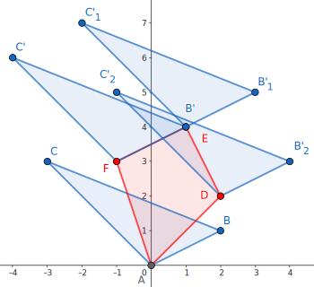

凸包
二维凸包
定义
凸多边形
凸多边形是指所有内角大小都在
凸包
在平面上能包含所有给定点的最小凸多边形叫做凸包。
其定义为：对于给定集合
实际上可以理解为用一个橡皮筋包含住所有给定点的形态。
凸包用最小的周长围住了给定的所有点。如果一个凹多边形围住了所有的点，它的周长一定不是最小，如下图。根据三角不等式，凸多边形在周长上一定是最优的。

Andrew 算法求凸包
常用的求法有 Graham 扫描法和 Andrew 算法，这里主要介绍 Andrew 算法。
性质
该算法的时间复杂度为
过程
首先把所有点以横坐标为第一关键字，纵坐标为第二关键字排序。
显然排序后最小的元素和最大的元素一定在凸包上。而且因为是凸多边形，我们如果从一个点出发逆时针走，轨迹总是「左拐」的，一旦出现右拐，就说明这一段不在凸包上。因此我们可以用一个单调栈来维护上下凸壳。
因为从左向右看，上下凸壳所旋转的方向不同，为了让单调栈起作用，我们首先 升序枚举 求出下凸壳，然后 降序 求出上凸壳。
求凸壳时，一旦发现即将进栈的点（
通常情况下不需要保留位于凸包边上的点，因此上面一段中
实现
代码实现
// stk[] 是整型，存的是下标
// p[] 存储向量或点
tp = 0; // 初始化栈
std::sort(p + 1, p + 1 + n); // 对点进行排序
stk[++tp] = 1;
// 栈内添加第一个元素，且不更新 used，使得 1 在最后封闭凸包时也对单调栈更新
for (int i = 2; i <= n; ++i) {
while (tp >= 2 // 下一行 * 操作符被重载为叉积
&& (p[stk[tp]] - p[stk[tp - 1]]) * (p[i] - p[stk[tp]]) <= 0)
used[stk[tp--]] = 0;
used[i] = 1; // used 表示在凸壳上
stk[++tp] = i;
}
int tmp = tp; // tmp 表示下凸壳大小
for (int i = n - 1; i > 0; --i)
if (!used[i]) {
// ↓求上凸壳时不影响下凸壳
while (tp > tmp && (p[stk[tp]] - p[stk[tp - 1]]) * (p[i] - p[stk[tp]]) <= 0)
used[stk[tp--]] = 0;
used[i] = 1;
stk[++tp] = i;
}
for (int i = 1; i <= tp; ++i) // 复制到新数组中去
h[i] = p[stk[i]];
int ans = tp - 1;
stk = [] # 是整型，存的是下标
p = [] # 存储向量或点
tp = 0 # 初始化栈
p.sort() # 对点进行排序
tp = tp + 1
stk[tp] = 1
# 栈内添加第一个元素，且不更新 used，使得 1 在最后封闭凸包时也对单调栈更新
for i in range(2, n + 1):
while tp >= 2 and (p[stk[tp]] - p[stk[tp - 1]]) * (p[i] - p[stk[tp]]) <= 0:
# 下一行 * 操作符被重载为叉积
used[stk[tp]] = 0
tp = tp - 1
used[i] = 1 # used 表示在凸壳上
tp = tp + 1
stk[tp] = i
tmp = tp # tmp 表示下凸壳大小
for i in range(n - 1, 0, -1):
if used[i] == False:
# ↓求上凸壳时不影响下凸壳
while tp > tmp and (p[stk[tp]] - p[stk[tp - 1]]) * (p[i] - p[stk[tp]]) <= 0:
used[stk[tp]] = 0
tp = tp - 1
used[i] = 1
tp = tp + 1
stk[tp] = i
for i in range(1, tp + 1):
h[i] = p[stk[i]]
ans = tp - 1
根据上面的代码，最后凸包上有
Graham 扫描法
性质
与 Andrew 算法相同，Graham 扫描法的时间复杂度为
过程
首先找到所有点中，纵坐标最小的一个点
和 Andrew 算法类似地，我们考虑从点
新建一个栈用于存储凸包的信息，先将
代码实现
struct Point {
double x, y, ang;
Point operator-(const Point& p) const { return {x - p.x, y - p.y, 0}; }
} p[MAXN];
double dis(Point p1, Point p2) {
return sqrt((p1.x - p2.x) * (p1.x - p2.x) + (p1.y - p2.y) * (p1.y - p2.y));
}
bool cmp(Point p1, Point p2) {
if (p1.ang == p2.ang) {
return dis(p1, p[1]) < dis(p2, p[1]);
}
return p1.ang < p2.ang;
}
double cross(Point p1, Point p2) { return p1.x * p2.y - p1.y * p2.x; }
int main() {
for (int i = 2; i <= n; ++i) {
if (p[i].y < p[1].y || (p[i].y == p[1].y && p[i].x < p[1].x)) {
std::swap(p[1], p[i]);
}
}
for (int i = 2; i <= n; ++i) {
p[i].ang = atan2(p[i].y - p[1].y, p[i].x - p[1].x);
}
std::sort(p + 2, p + n + 1, cmp);
sta[++top] = 1;
for (int i = 2; i <= n; ++i) {
while (top >= 2 &&
cross(p[sta[top]] - p[sta[top - 1]], p[i] - p[sta[top]]) < 0) {
top--;
}
sta[++top] = i;
}
return 0;
}
闵可夫斯基和
定义
点集
例如：对于点集

将

不难发现新图形也是一个 凸包：

性质
-
若点集合
， 为凸集，则其闵可夫斯基和 也是凸集。 证明
设
，有 ， 且 ，则对任意 均有： 证毕。
-
若点集
， 为凸集，则其闵可夫斯基和 的边集是由凸集 ， 的边按极角排序后连接的结果。 证明
不妨假设凸集
中任意一条边的斜率与 中任意一条边的斜率均不相同。将坐标系进行旋转，使得 上的一条边 与 轴平行且在最下方。 设此时
中最低的点 ， 的 最低 且 靠左 的点 。 可知
，所以 必然在 的边界上。 同理，
中 最低 且 靠右 的点 有 ，也必然在 的边界上。 因此，有
。 若按顺序进行旋转，则结果连续的构成了
中的每条边。 证毕。
实现
我们可以根据性质 2，将凸集
时间复杂度：
实现
template <class T>
struct Point {
T x, y;
Point(T x = 0, T y = 0) : x(x), y(y) {}
friend Point operator+(const Point &a, const Point &b) {
return {a.x + b.x, a.y + b.y};
}
friend Point operator-(const Point &a, const Point &b) {
return {a.x - b.x, a.y - b.y};
}
// 点乘
friend T operator*(const Point &a, const Point &b) {
return a.x * b.x + a.y * b.y;
}
// 叉乘
friend T operator^(const Point &a, const Point &b) {
return a.x * b.y - a.y * b.x;
}
};
template <class T>
vector<Point<T>> minkowski_sum(vector<Point<T>> a, vector<Point<T>> b) {
vector<Point<T>> c{a[0] + b[0]};
for (usz i = 0; i + 1 < a.size(); ++i) a[i] = a[i + 1] - a[i];
for (usz i = 0; i + 1 < b.size(); ++i) b[i] = b[i + 1] - b[i];
a.pop_back(), b.pop_back();
c.resize(a.size() + b.size() + 1);
merge(a.begin(), a.end(), b.begin(), b.end(), c.begin() + 1,
[](const Point<i64> &a, const Point<i64> &b) { return (a ^ b) < 0; });
for (usz i = 1; i < c.size(); ++i) c[i] = c[i] + c[i - 1];
return c;
}
例题
例题 [JSOI2018] 战争
有两个凸包
实现
#include <algorithm>
#include <cassert>
#include <cstdint>
#include <iostream>
#include <vector>
using namespace std;
using i64 = int64_t;
using isz = ptrdiff_t;
using usz = size_t;
template <class T>
struct Point {
T x, y;
Point(T x = 0, T y = 0) : x(x), y(y) {}
friend Point operator+(const Point &a, const Point &b) {
return {a.x + b.x, a.y + b.y};
}
friend Point operator-(const Point &a, const Point &b) {
return {a.x - b.x, a.y - b.y};
}
// 点乘
friend T operator*(const Point &a, const Point &b) {
return a.x * b.x + a.y * b.y;
}
// 叉乘
friend T operator^(const Point &a, const Point &b) {
return a.x * b.y - a.y * b.x;
}
friend istream &operator>>(istream &is, Point &p) { return is >> p.x >> p.y; }
};
template <class T>
vector<Point<T>> convex_hull(vector<Point<T>> p) {
assert(!p.empty());
sort(p.begin(), p.end(),
[](const Point<i64> &a, const Point<i64> &b) { return a.x < b.x; });
vector<Point<T>> u{p[0]}, d{p.back()};
for (usz i = 1; i < p.size(); ++i) {
while (u.size() >= 2 &&
((u.back() - u[u.size() - 2]) ^ (p[i] - u.back())) > 0)
u.pop_back();
u.push_back(p[i]);
}
for (usz i = p.size() - 2; (isz)i >= 0; --i) {
while (d.size() >= 2 &&
((d.back() - d[d.size() - 2]) ^ (p[i] - d.back())) > 0)
d.pop_back();
d.push_back(p[i]);
}
u.insert(u.end(), d.begin() + 1, d.end());
return u;
}
template <class T>
vector<Point<T>> minkowski_sum(vector<Point<T>> a, vector<Point<T>> b) {
vector<Point<T>> c{a[0] + b[0]};
for (usz i = 0; i + 1 < a.size(); ++i) a[i] = a[i + 1] - a[i];
for (usz i = 0; i + 1 < b.size(); ++i) b[i] = b[i + 1] - b[i];
a.pop_back(), b.pop_back();
c.resize(a.size() + b.size() + 1);
merge(a.begin(), a.end(), b.begin(), b.end(), c.begin() + 1,
[](const Point<i64> &a, const Point<i64> &b) { return (a ^ b) < 0; });
for (usz i = 1; i < c.size(); ++i) c[i] = c[i] + c[i - 1];
return c;
}
int main() {
cin.tie(nullptr)->sync_with_stdio(false);
uint32_t n, m, q;
vector<Point<i64>> a, b;
cin >> n >> m >> q;
a.resize(n), b.resize(m);
for (auto &p : a) cin >> p;
for (auto &p : b) cin >> p, p = 0 - p;
a = convex_hull(a), b = convex_hull(b);
a = minkowski_sum(a, b);
a.pop_back();
for (usz i = 1; i < a.size(); ++i) a[i] = a[i] - a[0];
while (q--) {
Point<i64> v;
cin >> v;
v = v - a[0];
if (v.x < 0) {
cout << "0\n";
continue;
}
auto it = upper_bound(
a.begin() + 1, a.end(), v,
[](const Point<i64> &a, const Point<i64> &b) { return (a ^ b) < 0; });
if (it == a.begin() + 1 || it == a.end()) {
cout << "0\n";
continue;
}
i64 s0 = *it ^ *prev(it), s1 = v ^ *prev(it), s2 = *it ^ v;
cout << (s1 >= 0 && s2 >= 0 && s1 + s2 <= s0) << '\n';
}
return 0;
}
三维凸包
基础知识
圆的反演：反演中心为
，反演半径为 ，若经过 的直线经过 , ，且 ，则称 、 关于 互为反演。
过程
求凸包的过程如下：
- 首先对其微小扰动，避免出现四点共面的情况。
- 对于一个已知凸包，新增一个点
，将 视作一个点光源，向凸包做射线，可以知道，光线的可见面和不可见面一定是由若干条棱隔开的。 - 将光的可见面删去，并新增由其分割棱与
构成的平面。 重复此过程即可，由 Pick 定理、欧拉公式（在凸多面体中，其顶点 、边数 及面数 满足 ）和圆的反演，复杂度 。1
模板题
重复上述过程即可得到答案。
代码实现
#include <cmath>
#include <cstdlib>
#include <iomanip>
#include <iostream>
using namespace std;
constexpr int N = 2010;
constexpr double eps = 1e-9;
int n, cnt, vis[N][N];
double ans;
double Rand() { return rand() / (double)RAND_MAX; }
double reps() { return (Rand() - 0.5) * eps; }
struct Node {
double x, y, z;
void shake() {
x += reps();
y += reps();
z += reps();
}
double len() { return sqrt(x * x + y * y + z * z); }
Node operator-(Node A) const { return {x - A.x, y - A.y, z - A.z}; }
Node operator*(Node A) const {
return {y * A.z - z * A.y, z * A.x - x * A.z, x * A.y - y * A.x};
}
double operator&(Node A) const { return x * A.x + y * A.y + z * A.z; }
} A[N];
struct Face {
int v[3];
Node Normal() { return (A[v[1]] - A[v[0]]) * (A[v[2]] - A[v[0]]); }
double area() { return Normal().len() / 2.0; }
} f[N], C[N];
int see(Face a, Node b) { return ((b - A[a.v[0]]) & a.Normal()) > 0; }
void Convex_3D() {
f[++cnt] = {1, 2, 3};
f[++cnt] = {3, 2, 1};
for (int i = 4, cc = 0; i <= n; i++) {
for (int j = 1, v; j <= cnt; j++) {
if (!(v = see(f[j], A[i]))) C[++cc] = f[j];
for (int k = 0; k < 3; k++) vis[f[j].v[k]][f[j].v[(k + 1) % 3]] = v;
}
for (int j = 1; j <= cnt; j++)
for (int k = 0; k < 3; k++) {
int x = f[j].v[k], y = f[j].v[(k + 1) % 3];
if (vis[x][y] && !vis[y][x]) C[++cc] = {x, y, i};
}
for (int j = 1; j <= cc; j++) f[j] = C[j];
cnt = cc;
cc = 0;
}
}
int main() {
cin >> n;
for (int i = 1; i <= n; i++) cin >> A[i].x >> A[i].y >> A[i].z, A[i].shake();
Convex_3D();
for (int i = 1; i <= cnt; i++) ans += f[i].area();
cout << fixed << setprecision(3) << ans << '\n';
return 0;
}
练习
参考资料与注释
创建日期: 2018年7月11日